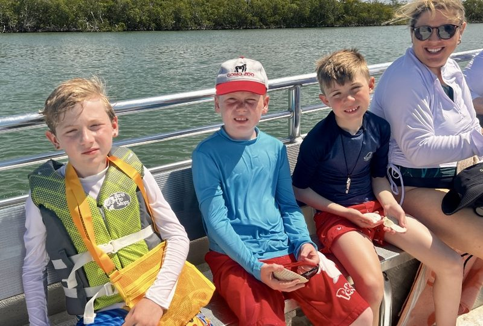
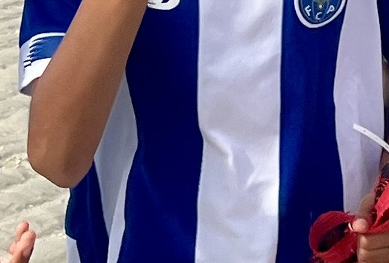
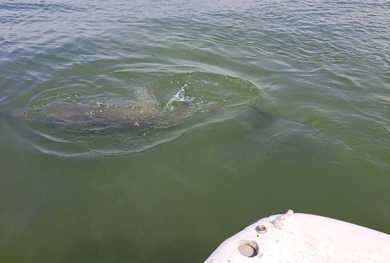
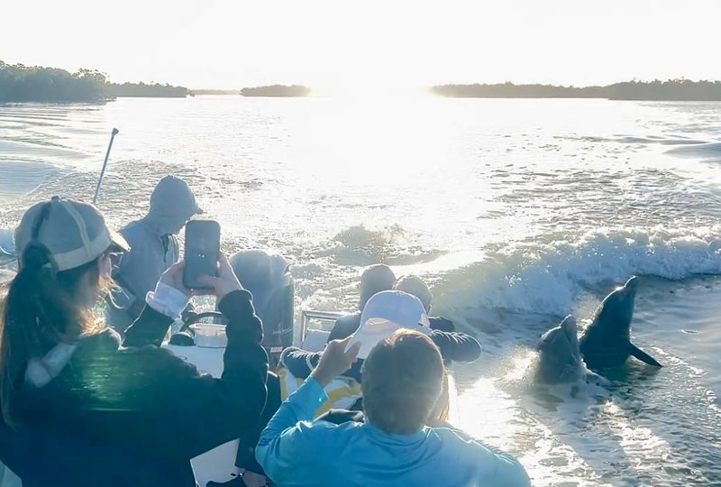

Explore the 10,000 Islands
Every tour is led by a certified Florida Master Naturalist. Choose the experience that's right for your group.

Dolphin, Birding & Shelling Tour
Spot dolphins, rare shorebirds, and collect shells on pristine barrier islands. Perfect introduction to the 10,000 Islands for all ages.

10,000 Islands Shelling Excursion
Deep into the 10,000 Islands refuge for an extended shelling and wildlife experience. Multiple barrier island stops.

Boat Assisted Kayak Eco Tour
Power boat to remote locations, then kayak through mangrove tunnels. Our most unique experience. Great for all skill levels.

Private Family Fun Tour
Your own private guide, your own schedule. Boating, beaching, shelling, and fishing all in one. Fully customized for your family.

Manatee & Wildlife Tour
A relaxed, family-friendly tour focused on manatees in their natural habitat. Our most affordable tour — perfect first introduction.

Private Photography Safari
Designed for serious photographers and birders. Best locations, optimal lighting, unobstructed shots. Fully private and customized.